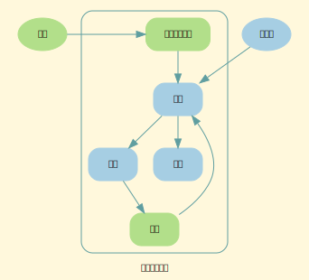
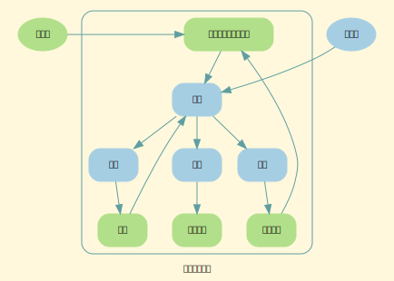
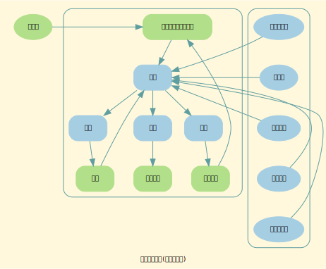

入门指南
让我们开始吧！有很多内容需要学习，但每次旅程总有起点。在本章中，我们会讨论：
- 专业主义
- 软件项目管理的三要素：角色，流程和产出物
专业主义
专业主义
- 对团队每个成员的最基本要求：专业，保证在其负责领域的专业性。
- 专业主义要求管理者，认识到团队中的每个人都有其特殊的价值。
- 专业主义要求每个成员，学习所在领域的知识和技能。
- 专业主义要求每个成员，学习所在领域的标准和规范。
- 专业主义要求每个成员，尽量去遵守最高标准和规范。
- 专业主义要求每个成员，学习专业的解决问题方法。
- 专业主义要求每个成员，使用正确的方法解决问题。
软件管理的核心三要素
核心要素
软件管理的核心三要素是：角色、流程和产出物。 我们可以将这三个要素合成一句话：让各个角色按照流程生成产出物。
角色
角色和物理人的关系
- 一个角色可以由多个人担当。
- 一个人可以担当多个角色。
- 建议：管理和技术不要让同一个人担任。
提示：产品经理属于技术类，建议不要担任其它经理角色。 - 建议：开发和测试不要让同一个人担任。
一个非常有益的角色对抗。
为什么需要多个角色？
- 专业性的要求：一个软件产品的开发，需要多种不同的知识和能力，每个方面都需要一个特有的角色。
- 全面性的要求：产品存在多个视角，每个视角都需要一个特定的角色，确保可以全面的负责这个产品。
- 职权的要求：角色的职权来自于角色的能力，每个角色根据其能力，拥有对应的决策权。
- 角色对抗：角色之间的冲突是有益的。
比如：测试和开发。
流程
流程，用来定义一个过程，这个过程备用用于一个（或多个）角色创造出需要的产出物。
在软件项目管理中，有一个主流程，和多个分支流程。 各个分支流程都会创造出一些产出物。 这些产出物有在主流程的支配下，最终得到项目所需要的产品。
产出物
产出物，有各种各样的形式，可能是需求分析文档、设计文档、会议纪要、代码、程序或者测试记录等等。
角色
在本章中，我们会讨论：
- 软件项目团队的角色
- 软件项目团队的规模和角色配置
项目管理 - 团队角色
四辆马车
项目经理负责，按照公司规定的流程运作项目，是团队中的法官。
产品经理负责，做什么。
开发团队负责，怎么做。
测试团队负责，做的怎么样。
角色
- 项目经理（Project Manager）
- 产品经理（Product Manager）
- 开发经理（Development Manager）
- 开发组长（Dev Leader）
开发组长是开发团队领袖，起到一个技术领导和技术仲裁的作用。 - 用户界面设计师（User Interface Designer） 在设计工作中偏重于用户界面设计。需要有一定的美术能力。
- 用户体验设计师（User Experience Designer） 在设计工作中偏重于用户交互方面的设计。
- 软件功能设计师（Software Function Designer） 在设计工作中偏重于用户界面功能设计。对软件技术更加了解。
- 系统设计师（System Designer）
在设计工作中偏重于系统的架构设计。 - 开发架构师（Architect） 经验丰富的开发工程师
- 开发工程师（Developer/Software Engineer）
- 运维工程师（DevOps Engineer）
- 信息工程师（Information Engineer）
负责信息的收集、处理、分析和展示
编写产品的文档、使用手册。
辅助修改 API 文档。
- 开发组长（Dev Leader）
- 测试经理（QA Manager）
- 测试组长（QA Leader）
开发组长是测试团队领袖，起到一个技术领导和技术仲裁的作用。 - 测试架构师（QA Architect）
- 测试工程师（QA Engineer）
- 测试组长（QA Leader）
- 发布经理（Release Manager）
团队规模和角色配置
团队规模和角色配置
| 团队人数 | 角色安排 | 说明 |
|---|---|---|
| 1 人 | 程序员（1） | 一个人干所有事儿 |
| 2~3 人 | 开发组长 (1) | 让一位开发担任组长，负责一些管理和协调工作 |
| 程序员（2） | ||
| 4~6 人 | 开发组长（1） | 要编写专门的设计文档 |
| 程序员（4） | 有一个比较成熟缺陷处理流程 | |
| 测试 (1) | 增加专门的测试人员 | |
| 7~9 人 | 开发组长（1） | 增强设计的独立性 |
| 产品经理（1） | 加入产品经理，关注产品的业务和市场 | |
| 程序员（5） | ||
| 测试 (2) | ||
| 10~12 人 | 项目经理（1） | 增加项目经理 |
| 产品经理（1） | 加入产品经理，关注产品的业务和市场 | |
| 开发组长（1） | 增强设计的独立性 | |
| 程序员（7） | ||
| 测试 (2) | ||
| 12~ 人 | 项目经理（1） | |
| 产品经理 (1) | ||
| 开发经理 (1?) | 可以考虑增加开发经理 | |
| 测试经理 (1?) | 可以考虑增加测试经理 | |
| 开发组长 (1) | 增加美工设计师，DevOps 等等 | |
| 程序员 (7+) | ||
| 测试组长 (1) | ||
| 测试 (2+) |
流程
在本章中，我们会讨论：
- 项目开发的主流程
- 文档审核流程
- 项目估算流程
- 代码审核流程
- 代码审核流程（代码冻结后）
- 功能开发流程
- 缺陷修改流程
项目主流程
主流程
| 阶段 | 任务 | 角色 | 里程碑 | 备注 |
|---|---|---|---|---|
| 起始阶段 | 提交需求说明书 | 产品经理 | ||
| 审阅需求说明书 | 所有角色 | 需求确认 | ||
| 设计阶段 | 设计软件 | 软件设计 | ||
| 原型设计 | 软件设计 | |||
| UI 设计 | UI 设计 | |||
| 审阅设计 | 所有角色 | 设计完成 | ||
| 估算开发人月数 | 所有角色 | 估算完成 | ||
| 开发阶段 | 迭代 1 | 所有角色 | 开发里程碑 1 | 开发工作和测试工作同时进行 |
| 迭代 2 | ||||
| 迭代 3 | ||||
| 迭代 4 | 开发里程碑 2 | |||
| … | ||||
| … | ||||
| 功能冻结日 | 功能冻结日 | |||
| 功能完成日 | 功能完成日 | 功能开发完成日 | ||
| 代码冻结日 | 代码冻结日 | |||
| 测试阶段 | 第 1 轮测试 | 一般情况下，有 3~4 轮测试 | ||
| 第 2 轮测试 | ||||
| 第 3 轮测试 | ||||
| 候选发布版 1 | 候选发布版到项目结束，大概 1 个迭代 | |||
| 候选发布版 2 | ||||
| … | ||||
| 候选发布版 n | ||||
| 发布阶段 | 发布版 | 确定发布版 | ||
| 发布日 |
说明
- 一个迭代一般是 2 周或者 3 周，根据项目的情况，自行做选择。
- 一个里程碑一般是 2 个迭代或者 3 个迭代，根据项目的情况，自行做选择。
- 测试用例编写在开发阶段就已经开始。
- 测试用例审阅在开发阶段中进行。
- 功能测试在开发阶段就已经开始。
- 功能终止日：功能将不会发生变化。
- 功能完成日：功能开发完成。
- 代码冻结日：代码提交将进入一个更严格的审核流程。
项目常见的关键日
- 开始日(Kickoff Day)
- 功能冻结日(Feature Freeze Day)
本日之后，不再接受新的需求或者需求变更 - 功能开发完成日(Feature Dev Completed)
所有的功能开发完成。 - 功能测试完成日(Feature Testing Completed)
所有的功能测试完成。 - 代码冻结日(Code Freeze Day)
只能修改 Stop Ship/Critical 的缺陷。
使用加强版的代码审查流程 - 最终翻译采集日(Final L10N Drop Day)
最后一次向翻译组提供需要被翻译的资源 - 文档完成日(Documentation Completed Day)
- 用户测试版选出日(Beta Version)
- 项目审核申请日
开发进入项目发布审核流程 - 候选版选出日(Release Candidate Version)
- 最终版本选出日(Golden Master Version)
- 发布日(Publish Day)
文档审核流程
文档审核流程

说明：
- 需要项目经理做审核
- 需要产品经理做审核
- 需要开发经理做审核
- 需要测试经理做审核
- 需要一位开发工程师做审核
- 需要一位运维工程师做审核
- 需要一位测试工程师做审核
项目管理 - 项目估算流程
估算的目的
- 估计项目的人月数
- 估计项目的发布日
- 帮助决定项目做哪些任务
- 帮助设计日程计划
- 让别人了解任务大概在什么时候完成
- 让别人了解任务的工作量多大
项目估算的时间点
- 设计完成之后
估算项目人月数的方法
基于开发人月数的估计
准备工作
建立一个项目的特性列表。
针对每个特性，建立一个功能列表。
建立估算表
建立一个 Excel 表格，类似如下
| 功能 | UI(难) | 中 | 易 | 业务层(难) | 中 | 易 | 数据层(难) | 中 | 易 |
|---|---|---|---|---|---|---|---|---|---|
| 特性 1 | 1 | 2 | 1 | ||||||
| - 功能 1 | 1 | 2 | 1 |
说明：
- 只估计开发的时间
当然，你也可以根据需要单独估计测试和运维的时间 - 可以写小数和整数
- 易：代表 1 天
- 中：代表 2 天
- 难：代表 5 天
开发时间 = SUM(UI + BS + DB)
项目估算 = 开发工程师人数 / 1.8 * 团队成员人数 * 1.2
1.8 是 项目时间 / 开发时间。开发时间占比的倒数。
1.2 是 弹性参数。
使用上面的方法，在有个多个项目的经验之后，会越来越精确。
估算发布日
- 最直接的方法是建立日程计划
代码审核流程
代码审核流程

说明：
- 需要一位开发工程师做代码审核
代码审核流程（代码冻结后）
流程

说明：
- 需要一位开发工程师的批准
- 需要一位架构师的批准
- 需要一位开发经理的批准
- 需要一位测试经理的批准
- 需要一位测试工程师的批准
功能开发流程
功能开发流程

缺陷管理流程
缺陷管理流程

产出物
在本章中，我们会讨论：
- 产出物列表
- 功能燃起计划
- 缺陷燃尽计划
产出物列表
产出物列表
| 阶段 | 产出物 | 创作者 |
|---|---|---|
| 初始阶段 | （业务）角色 | 产品经理 |
| （业务）用例 | 产品经理 | |
| 模块/功能说明 | 产品经理 | |
| 概念/数据说明 | 产品经理 | |
| 主要业务流程 | 产品经理 | |
| 功能列表 | 产品经理 | |
| 设计阶段 | 详细设计文档 | 设计师 |
| 数据库设计文档 | 设计师 | |
| 原型 | 设计师 | |
| UI 设计 | UI 设计师 | |
| 开发估算 | 开发团队 | |
| 开发计划 | 开发团队 | |
| 测试估算 | 测试团队 | |
| 测试计划 | 测试团队 | |
| 开发阶段 | 代码 | 开发工程师 |
| DevOps 代码 | 运维工程师 | |
| DevOps 环境 | 运维工程师 | |
| 每日构建 | 运维工程师 | |
| 每日测试的运行 | 运维工程师 | |
| 单元测试 | 开发工程师 | |
| 性能测试 | 开发工程师 | |
| 测试用例 | 测试工程师 | |
| 测试计划 | 测试工程师 | |
| 自动测试代码 | 测试工程师 | |
| 自动测试运行 | 测试工程师 | |
| 测试数据 | 测试工程师，开发工程师 | |
| 测试报告 | 测试工程师 | |
| 测试环境 | 测试工程师，运维工程师 | |
| 功能燃起图 | 开发经理，测试经理 | |
| 缺陷燃尽图 | 测试经理，开发经理 | |
| 项目报告 | 项目经理 | |
| 发布阶段 | 产品质量报告 | 测试经理 |
| 产品发布报告 | 项目经理 | |
| 产品发布包 | 运维工程师 |
说明：根据项目的实际情况，自行决定需要哪些产出物。
会议
在本章中，我们会讨论：
- 站立会议
- 每周会议
- 迭代会议
- 里程碑会议
- 项目复盘会议
每日站立会议
每日站立会议
站立会议的形式可以是：小组面对面站立、聊天群、在线文档等等。
发生时间：每天。
参与者：所有人
会议内容： 每人每日发布三个内容:
- 昨天完成的任务
- 今天计划做的任务
- 是否遇到障碍？如果有，障碍是什么？ 这里的障碍指你需要得到别人帮助才能解决的事情。
每周会议
每周会议
发生时间：每周固定日。
参与者：经理和组长
会议内容：
- 沟通小组之间的问题。
迭代会议
迭代会议
迭代会议是一种特殊的每周会议。 发生时间：一个迭代刚刚结束的时候。
参与者：经理和组长
会议内容：
- 沟通小组之间的问题。
- 功能燃起计划
- 缺陷燃尽计划
- 总结项目状态
里程碑会议
里程碑会议
里程碑会议是一种特殊的每周会议。 发生时间：一个里程碑刚刚结束的时候。
参与者：经理和组长
会议内容：
- 沟通小组之间的问题。
- 功能燃起计划
- 缺陷燃尽计划
- 总结项目状态
- 判断项目状态的健康情况。
- 修正里程碑计划
项目复盘会议
项目复盘会议
发生时间：项目结束时期。
参与者：所有人
会议内容：
- 做的好的地方
- 做的不好的地方
- 需要改善的地方
演示会议
演示会议
发生时间：比较随机，可以是一个任务刚刚完成后，或者每周一个固定日。
参与者：任何人
会议内容：
- 演示最近的工作，可以是：文档，代码，新功能等等。
下一版的内容
下一版的内容
- 公司的技术组织架构
- 管理者需要的技能
- Issue 管理的配置
- 模板：项目估算表(excel)
- 模板：功能燃起图(excel)
- 模板：缺陷燃尽图(excel)
- 项目进度报告
- 项目总结报告